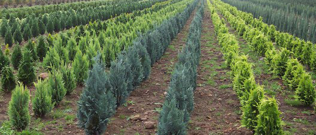
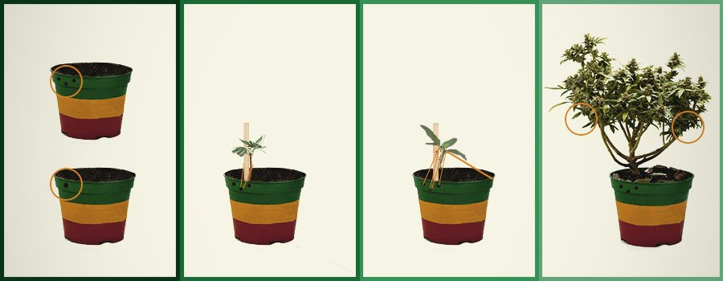
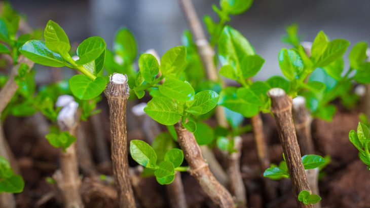

Nursery Stock
Nursery stock are young garden plants (also called prebonsai), that sometimes have great qualities
for Bonsai purposes. Buying Bonsai nursery stock is a fast way of ‘propagating’ a tree and you can start right
away with training it.
Good quality nursery stock can be hard to find, try looking at small family owned nurseries (large commercial
stores often don't sell rough material). Some (online) Bonsai shops sell nursery stock as well, but this comes
at a price higher than at small nurseries. Check this article for a store near you; Bonsai trees for sale.

From Seeds
Growing a Bonsai tree from seed is one of the most rewarding processes. Although you may need
to wait a few weeks or months for the seeds to germinate, growing a Bonsai tree from seed could be one of the
most rewarding processes you have ever experienced in your life. Some seeds have a really hard coating; therefore,
it may require several Seasons for those coats to break down and for the seeds to be able to germinate. If you
are willing to invest your time and effort, you will be rewarded with the most beautiful bonsai tree which no
money can buy. Growing a Bonsai tree from seed may take many years to perfect but it will be a tree that you could be proud of and be able to pass down generation to generation..

From Cuttings
Cultivating trees from cuttings is very popular among Bonsai growers, as it is an inexpensive
way to propagate new trees. This method will reduce the time it takes to grow trees from seeds by about a
year, while also giving you the benefit of knowing in advance which characteristics the cutting will posses.
To start with, suitable cuttings need to be collected. Most types of trees (specifically deciduous trees
and some conifers) are easily propagated using cuttings; select a branch of an existing tree and cut it off.
The size of the cuttings should be about about 2’’-4’’ tall (5-10 cm) and 2-5 mm thick. It is possible to
take larger cuttings as well but the chance of getting them to root is slim.

Read more.